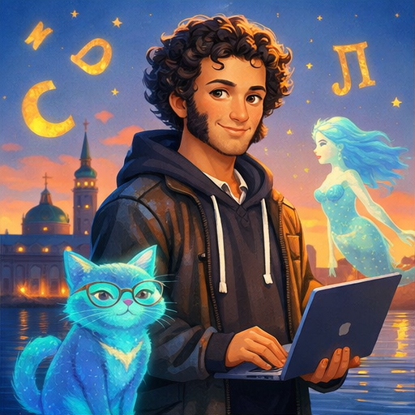
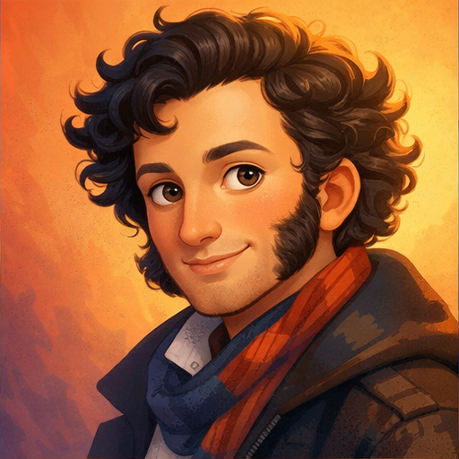
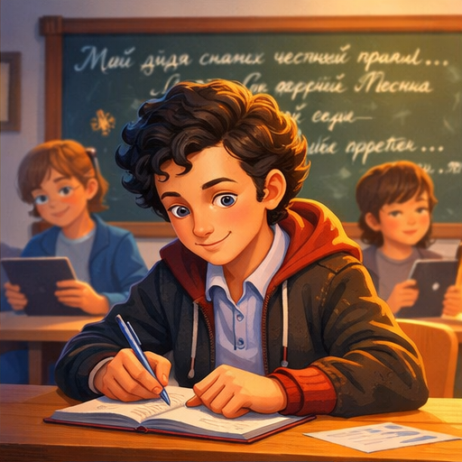
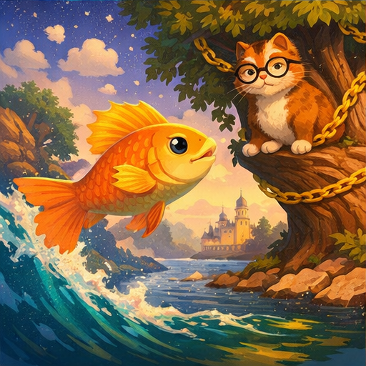
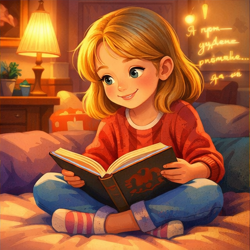
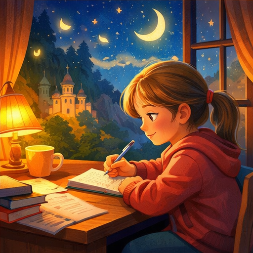

✨ Солнце русской поэзии
Почему мне захотелось узнать о Пушкине
Когда я услышала «У лукоморья дуб зелёный», у меня в голове появились русалки, кот учёный и золотая цепь. Мне стало интересно, кто придумал такой волшебный мир.

Кто такой Пушкин
Пушкин родился в 1799 году и стал самым известным поэтом России. Его стихи и сказки читают до сих пор.

Пушкин в школе
Он учился в Царскосельском лицее и уже тогда писал стихи. Я представляю, как он сидит за партой и придумывает рифмы.

Сказки Пушкина
Золотая рыбка, кот учёный и дуб у лукоморья — это целый волшебный мир, который придумал Пушкин.

Я читаю Пушкина
Мне нравится читать его стихи — они звучат как музыка.

Мой вывод
Пушкин учит мечтать, любить родной язык и видеть красоту мира. Его стихи живут даже сегодня.
